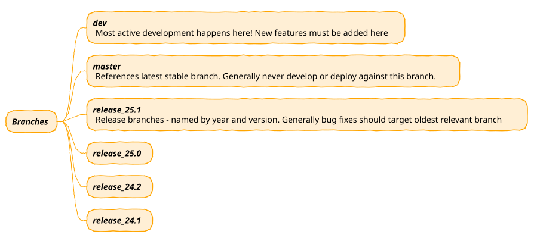
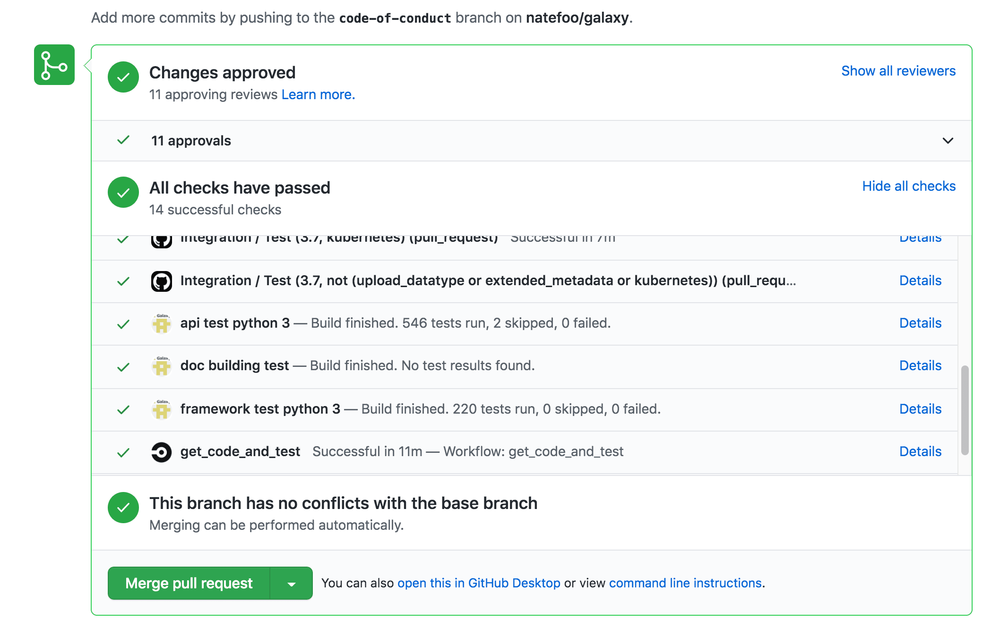
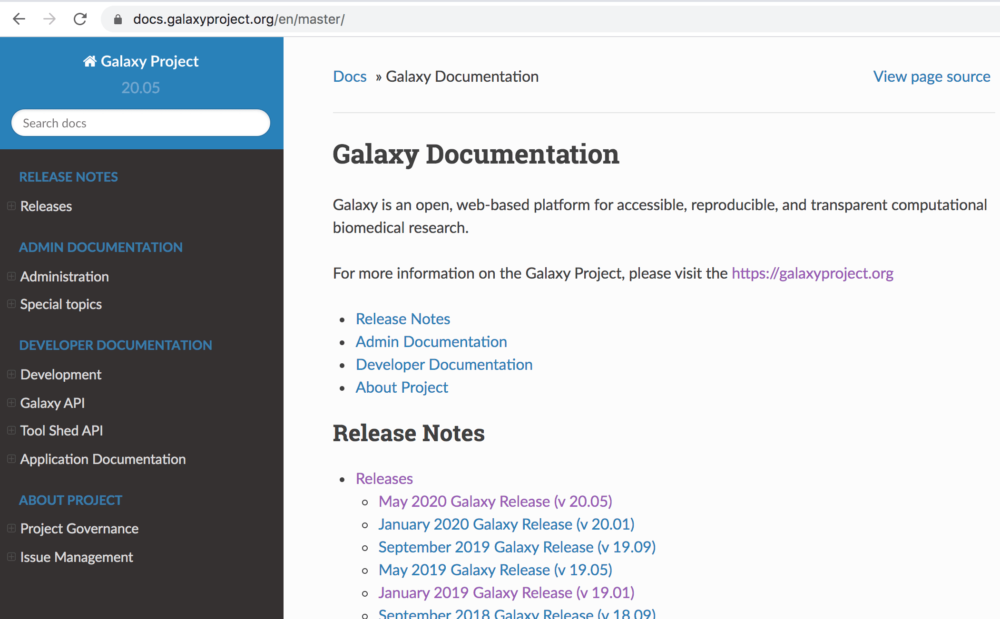

Architecture 02 - Galaxy Project Management and Contribution
Contributors
Questions
How do I contribute to Galaxy?
What is Galaxy’s governance model?
How does the release process work?
Objectives
Understand the contribution workflow
Learn about Galaxy’s open governance model
Understand the CI/CD pipeline
layout: introduction_slides topic_name: Galaxy Architecture
Architecture 02 - Galaxy Project Management and Contribution
The social architecture of the project.
layout: true left-aligned class: left, middle — layout: true class: center, middle
class: enlarge200
Contributing Quick Start
Contribution guidelines: https://bit.ly/gx-CONTRIBUTING-md
class: enlarge200
Pull Requests
Nearly all changes should come in through GitHub Pull Requests.
The exceptions include security patches, packaging and release process artifacts, and backporting fixes to older releases.
class: enlarge150
Security (SECURITY_POLICY.md)
In brief, to responsibly report security issues e-mail
galaxy-committers@lists.galaxyproject.org
Check out the full policy in SECURITY_POLICY.md.
Branches

class: enlarge150
Committers & Open Goverance
All repository goverance is done in the open on GitHub via Pull Requests and voting. Galaxy goes beyond open source to open goverance.
“The committers group is the group of trusted developers and advocates who manage the core Galaxy code base.”
“Galaxy Project committers are the only individuals who may commit to the core Galaxy code base.”
“Committers may participate in all formal votes, including votes to modify team membership, merge pull requests, and modify [policies].”
class: enlarge150
Working Groups
https://galaxyproject.org/community/wg/
“Galaxy has grown a lot over the years, going from a project at one university in 2005 to the global community it is today. Several parts of the Galaxy ecosystem have become avowedly and obviously community driven during that time, including tools, code, training, and several other international efforts. Galaxy Working Groups push this global model to other areas of Galaxy as well.”
class: enlarge200
Code of Conduct (CODE_OF_CONDUCT.md)
Describes expectations, encourages diversity, and describes how to report issues such as unacceptable behavior.
Check out the full policy in CODE_OF_CONDUCT.md.
class: enlarge150
Release Process
New large releases are issued roughly every 4 months. The process is guided by an auto-created self documenting release issue.
Check out the 25.1 release issue as an example.
Working groups create roadmaps aligned with each release and coordinated with project leadership.
class: enlarge150
Organizing Issues and Pull Requests
Extensive use of Github tags are used to try to organize the numerous issues and pull requests of the Galaxy repository.
The tags are described in detail in issues.rst.
Continuous Integration (CI)

If you get Red Xs - take a second to ponder whether they make sense and don’t be afraid to ask, it is a complex system with a lot of noise!
Linting and Code Formatting
Part of the Galaxy CI process includes linting and checking the format of both the backend Python and frontend ES 6 code. This linting process captures many common problems as well as enforcing a common code style.
The output reports from the CI process are relatively straightforward, but it is a good process to lint changes and formatting your code before opening pull requests for them.
Execute the format make command to format the backend code and then use tox
to lint the formatted code.
$ make format
$ tox -e lint
Execute the client-format make command to format the code and then the client-lint command
to lint the formatted code.
$ make client-format
$ make client-lint
mypy and Python Types
Starting with release 21.01, portions of the Galaxy backend have Python 3 type annotations and static checking is performed as part of CI. Imported library types are not enforcing and mypy does a fair job inferring types in most situations, so this process should be relatively transparent to contributors.
If there are problems with typing, the CI produces explicit output about how to correct problems. These problems generally just require a single type annotation. Feel free to request help on a pull request for what that should look like.
To run a subset of the python type checking locally, tox again can
be used:
$ tox -e mypy
A quick overview about why to add type annotations to Python code and how to use them can be found on this blog post. Additional useful resources include this cheat sheet from mypy and the Python docs for the typing module.
class: enlarge200
Development Environments
Galaxy developers use a wide range of IDEs and we don’t offer any formal recommendation of one over another.
However, Marius has assembled some documentation on debugging the Galaxy server and tests using VS Code.
Development Environment - Gitpod
Galaxy does have a Gitpod configuration that is enabled to allow editing and testing PRs https://www.gitpod.io/.
Video from Marius presenting Gitpod at the Galaxy Developer Roundtable (https://www.youtube.com/watch?v=3e71DFg3gsw#t=39m0s)
class: center
docs.galaxyproject.org

All these documents as well as versions code and deployment documentation and release notes can be found at docs.galaxyproject.org.
| .footnote[Previous: Galaxy Ecosystem and Projects | Next: Galaxy Architecture Principles] |
Key Points
- Open governance through pull requests and voting
- Working groups coordinate major efforts
- Regular release cycle (~4 months)
- Extensive CI/CD with linting and testing
Thank you!
This material is the result of a collaborative work. Thanks to the Galaxy Training Network and all the contributors! Tutorial Content is licensed under
Creative Commons Attribution 4.0 International License.
Tutorial Content is licensed under
Creative Commons Attribution 4.0 International License.